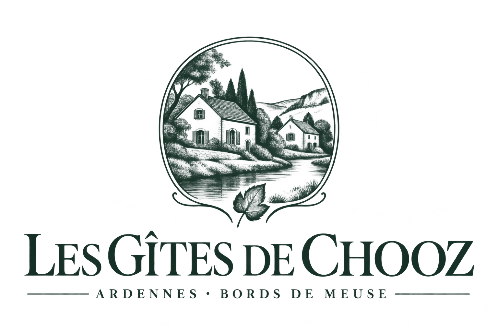

Votre séjour
commence ici.
Les gîtes, votre carnet
et les idées de sorties.
QR du portail
à insérer après publication
à insérer après publication
Adresse définitive à renseigner
CHOOZ · ARDENNES · MEUSE
Gabarit d’impression : le QR doit être généré pour l’adresse publiée du portail. Aucun QR fictif n’est fourni.
En attente du QR et de l’adresse.

Les gîtes, votre carnet
et les idées de sorties.
Adresse définitive à renseigner
CHOOZ · ARDENNES · MEUSE